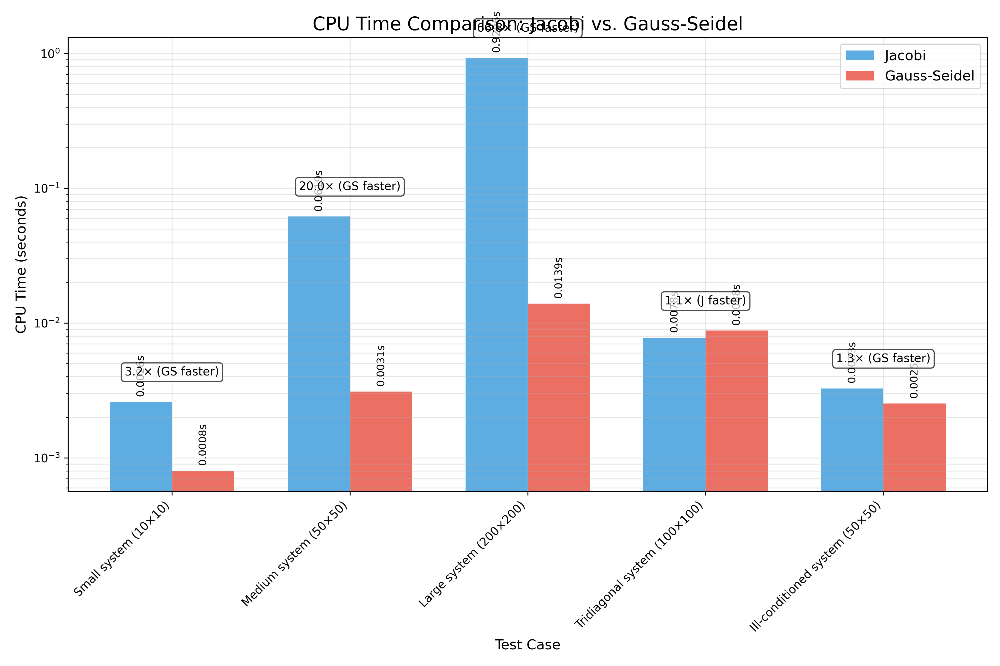
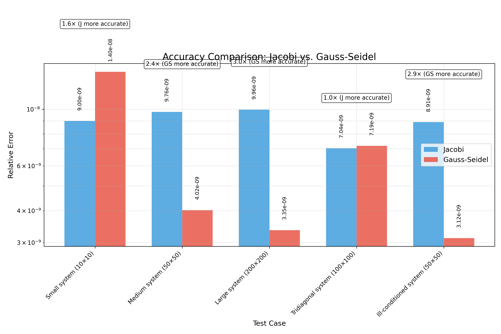
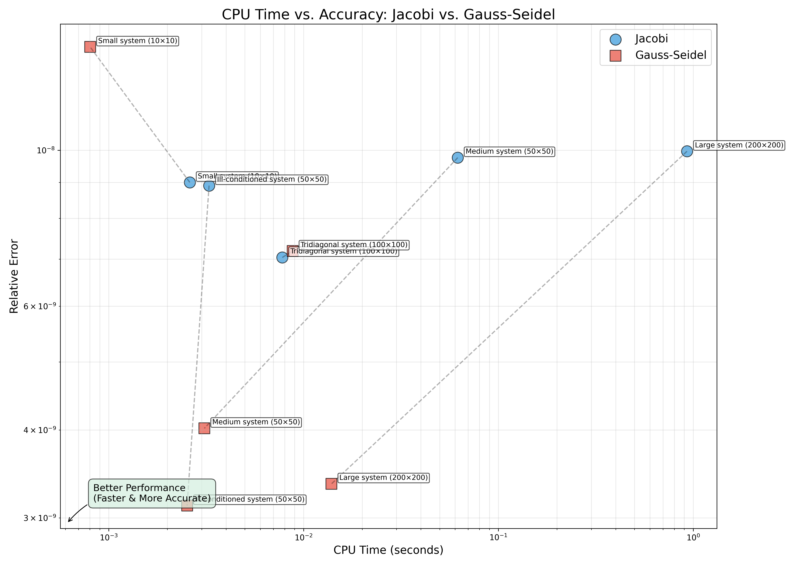
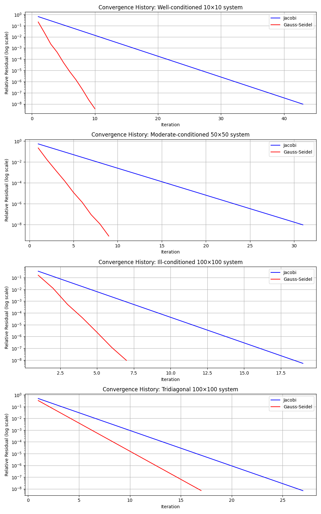

Introduction
This project implements and compares the Jacobi and Gauss-Seidel iterative methods for solving systems of linear equations. Both methods are widely used in numerical analysis, particularly for large sparse systems where direct methods become computationally expensive.
The comparison focuses specifically on two key performance metrics:
- CPU time (computational efficiency)
- Accuracy (solution precision)
Methods
Jacobi Method
The Jacobi method solves a system by isolating each diagonal element and solving for the corresponding variable. For each iteration k+1, the method computes:
This method uses only values from the previous iteration, making it naturally parallelizable.
Gauss-Seidel Method
The Gauss-Seidel method improves upon Jacobi by immediately using updated values as they become available. For each iteration k+1, the method computes:
This typically leads to faster convergence but makes the method inherently sequential.
Convergence Conditions
Both methods converge for any initial guess if:
- The matrix A is strictly diagonally dominant (|aii| > ∑j≠i |aij| for all i), or
- A is symmetric and positive definite
Results
CPU Time Performance
| Test Case | Jacobi Time (s) | Gauss-Seidel Time (s) | Faster Method | Speedup |
|---|---|---|---|---|
| Small system (10×10) | 0.002607 | 0.000803 | Gauss-Seidel | 3.24× |
| Medium system (50×50) | 0.061881 | 0.003097 | Gauss-Seidel | 19.98× |
| Large system (200×200) | 0.929627 | 0.013915 | Gauss-Seidel | 66.81× |
| Tridiagonal system (100×100) | 0.007780 | 0.008789 | Jacobi | 1.13× |
| Ill-conditioned system (50×50) | 0.003274 | 0.002525 | Gauss-Seidel | 1.30× |
Accuracy Performance
| Test Case | Jacobi Error | Gauss-Seidel Error | More Accurate Method | Accuracy Ratio |
|---|---|---|---|---|
| Small system (10×10) | 9.00e-09 | 1.40e-08 | Jacobi | 1.56× |
| Medium system (50×50) | 9.76e-09 | 4.02e-09 | Gauss-Seidel | 2.43× |
| Large system (200×200) | 9.96e-09 | 3.35e-09 | Gauss-Seidel | 2.97× |
| Tridiagonal system (100×100) | 7.04e-09 | 7.19e-09 | Jacobi | 1.02× |
| Ill-conditioned system (50×50) | 8.91e-09 | 3.12e-09 | Gauss-Seidel | 2.85× |
Key Findings
CPU Time
- Gauss-Seidel is generally faster in 4 out of 5 test cases
- Performance gap widens with system size (up to 66.81× faster)
- For tridiagonal systems, Jacobi is 1.13× faster
Accuracy
- Both methods achieve high accuracy (errors ~10-9)
- Gauss-Seidel is more accurate in 3 out of 5 test cases
- For small and tridiagonal systems, Jacobi is slightly more accurate
Visualizations
CPU Time Comparison
Comparison of CPU time performance across different test cases
Accuracy Comparison
Comparison of solution accuracy across different test cases
Combined Performance
CPU Time vs. Accuracy for both methods
Convergence Comparison
Convergence history for basic test cases
Code
Jacobi Method Implementation
def jacobi_method(A: np.ndarray, b: np.ndarray, x0: Optional[np.ndarray] = None,
max_iterations: int = 1000, tolerance: float = 1e-10,
return_history: bool = False) -> Dict[str, Any]:
"""
Solve a system of linear equations Ax = b using the Jacobi iterative method.
Parameters:
-----------
A : np.ndarray
Coefficient matrix of shape (n, n)
b : np.ndarray
Right-hand side vector of shape (n,)
x0 : np.ndarray, optional
Initial guess for the solution, defaults to zeros
max_iterations : int, optional
Maximum number of iterations to perform
tolerance : float, optional
Convergence criterion: stop when the relative residual is below this value
return_history : bool, optional
Whether to return the history of residuals and solutions
Returns:
--------
Dict[str, Any]
Dictionary containing:
- 'solution': The solution vector
- 'iterations': Number of iterations performed
- 'residuals': List of residual norms (if return_history=True)
- 'cpu_time': Time taken for computation
- 'converged': Boolean indicating whether the method converged
- 'error': Final relative error
"""
# Start timing
start_time = time.time()
# Get the size of the system
n = A.shape[0]
# Initialize the solution vector if not provided
if x0 is None:
x = np.zeros(n)
else:
x = x0.copy()
# Extract diagonal and create inverse diagonal matrix D^-1
D = np.diag(A)
# Check if the method can be applied (no zeros on the diagonal)
if np.any(np.abs(D) < 1e-10):
return {
'solution': None,
'iterations': 0,
'converged': False,
'cpu_time': time.time() - start_time,
'error': np.inf,
'message': "Method cannot be applied: zero(s) on the diagonal"
}
# Initialize variables for iteration
x_new = np.zeros_like(x)
residuals = []
initial_residual = np.linalg.norm(b - A @ x)
# Precompute the rest of the matrix (A - D)
R = A - np.diag(D)
# Iteration loop
for iteration in range(max_iterations):
# Compute new approximation: x_new = D^-1 * (b - R*x)
for i in range(n):
x_new[i] = (b[i] - np.sum(R[i] * x)) / D[i]
# Calculate residual
residual = np.linalg.norm(b - A @ x_new) / np.linalg.norm(b)
if return_history:
residuals.append(residual)
# Check for convergence
if residual < tolerance:
x = x_new.copy()
break
# Update solution for next iteration
x = x_new.copy()
# Calculate final error and CPU time
final_residual = np.linalg.norm(b - A @ x) / np.linalg.norm(b)
cpu_time = time.time() - start_time
# Prepare return dictionary
result = {
'solution': x,
'iterations': iteration + 1,
'converged': residual < tolerance,
'cpu_time': cpu_time,
'error': final_residual
}
if return_history:
result['residuals'] = residuals
return resultGauss-Seidel Method Implementation
def gauss_seidel_method(A: np.ndarray, b: np.ndarray, x0: Optional[np.ndarray] = None,
max_iterations: int = 1000, tolerance: float = 1e-10,
return_history: bool = False) -> Dict[str, Any]:
"""
Solve a system of linear equations Ax = b using the Gauss-Seidel iterative method.
Parameters:
-----------
A : np.ndarray
Coefficient matrix of shape (n, n)
b : np.ndarray
Right-hand side vector of shape (n,)
x0 : np.ndarray, optional
Initial guess for the solution, defaults to zeros
max_iterations : int, optional
Maximum number of iterations to perform
tolerance : float, optional
Convergence criterion: stop when the relative residual is below this value
return_history : bool, optional
Whether to return the history of residuals and solutions
Returns:
--------
Dict[str, Any]
Dictionary containing:
- 'solution': The solution vector
- 'iterations': Number of iterations performed
- 'residuals': List of residual norms (if return_history=True)
- 'cpu_time': Time taken for computation
- 'converged': Boolean indicating whether the method converged
- 'error': Final relative error
"""
# Start timing
start_time = time.time()
# Get the size of the system
n = A.shape[0]
# Initialize the solution vector if not provided
if x0 is None:
x = np.zeros(n)
else:
x = x0.copy()
# Extract diagonal elements
D = np.diag(A)
# Check if the method can be applied (no zeros on the diagonal)
if np.any(np.abs(D) < 1e-10):
return {
'solution': None,
'iterations': 0,
'converged': False,
'cpu_time': time.time() - start_time,
'error': np.inf,
'message': "Method cannot be applied: zero(s) on the diagonal"
}
# Initialize variables for iteration
residuals = []
# Iteration loop
for iteration in range(max_iterations):
x_old = x.copy()
# Update each component of x
for i in range(n):
# Compute sum of already updated components
sum1 = np.sum(A[i, :i] * x[:i])
# Compute sum of components not yet updated
sum2 = np.sum(A[i, i+1:] * x_old[i+1:])
# Update x[i]
x[i] = (b[i] - sum1 - sum2) / A[i, i]
# Calculate residual
residual = np.linalg.norm(b - A @ x) / np.linalg.norm(b)
if return_history:
residuals.append(residual)
# Check for convergence
if residual < tolerance:
break
# Calculate final error and CPU time
final_residual = np.linalg.norm(b - A @ x) / np.linalg.norm(b)
cpu_time = time.time() - start_time
# Prepare return dictionary
result = {
'solution': x,
'iterations': iteration + 1,
'converged': residual < tolerance,
'cpu_time': cpu_time,
'error': final_residual
}
if return_history:
result['residuals'] = residuals
return resultDownloads
Code Files
- iterative_solvers.py - Implementation of both methods
- comparison.py - Basic comparison script
- advanced_test.py - Advanced test cases
- comprehensive_benchmark.py - Comprehensive benchmark
- performance_comparison.py - Focused performance comparison
- real_world_example.py - Real-world application example
Documentation
- Full Report (Word) - Comprehensive report with all details
- CPU & Accuracy Analysis - Detailed analysis of performance
- Performance Summary - Concise summary of findings
{kind=link}
{kind=link}
{kind=link}
{kind=link}
{kind=link}